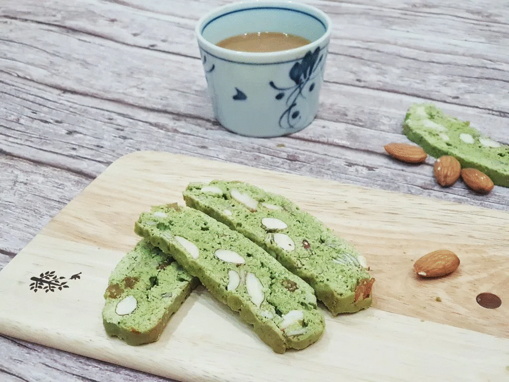
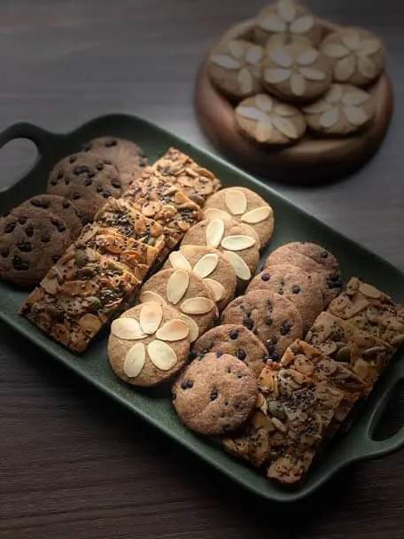

Cách dùng:
Mở hộp và mlem ngay không cần qua chế biến. Có thể dùng bữa sáng, ăn nhẹ. Tăng hương vị khi kết hợp bánh
với
trà, coffe, sữa… ,
Cách bảo quản:
Bảo quản ở nơi thoáng mát, tránh ánh nắng trực tiếp của
mặt trời.
Khuyến cáo: không dung sản phẩm hết hạn sử dụng, bảo quản sản phẩm theo hướng
dẫn nhà sản xuất
Khối lượng: 250gr
Sản phẩm của: Công ty TNHH MOLO
296/8 Núi Thành, Hòa Cường Bắc, Q.Hải Châu, Đà Nẵng
Điện thoại: 0846244457
Hạn sử dụng 3 tháng kể từ ngày sản xuất.
ĂN LÀ MÊ - CHÊ KHÔNG TÍNH TIỀN!!!

How to use:
Open the box and mlem right away without any processing. Can have breakfast, light snacks. Increase the
taste when combining cake with tea, coffee, milk...
Methods of preservation:
Store in a cool place, away from direct sunlight
Recommendation: do not use expired products, store products according to the
manufacturer's instructions
Weight: 250gr
Products of: MOLO Co., Ltd
296/8 Nui Thanh, Hoa Cuong Bac, Hai Chau District, Da Nang
Phone: 0846244457
Manufacturer: MOLO Co., Ltd
Expiry date 3 months from date of manufacture.
EATING IS AWESOME - CREATION DOESN'T CHARGE MONEY!!!!
